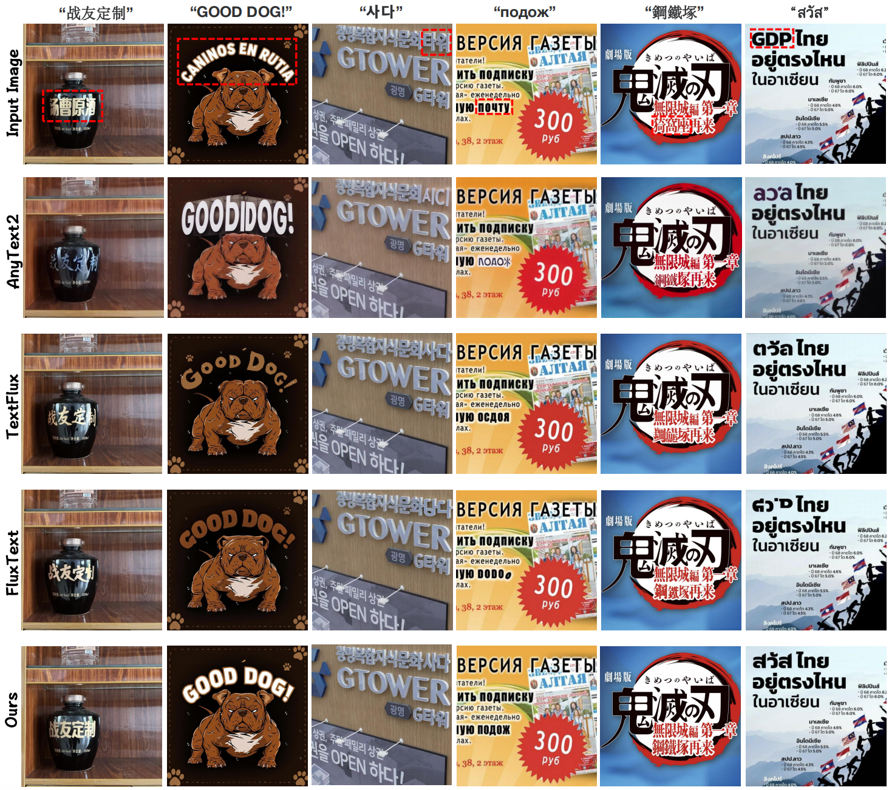
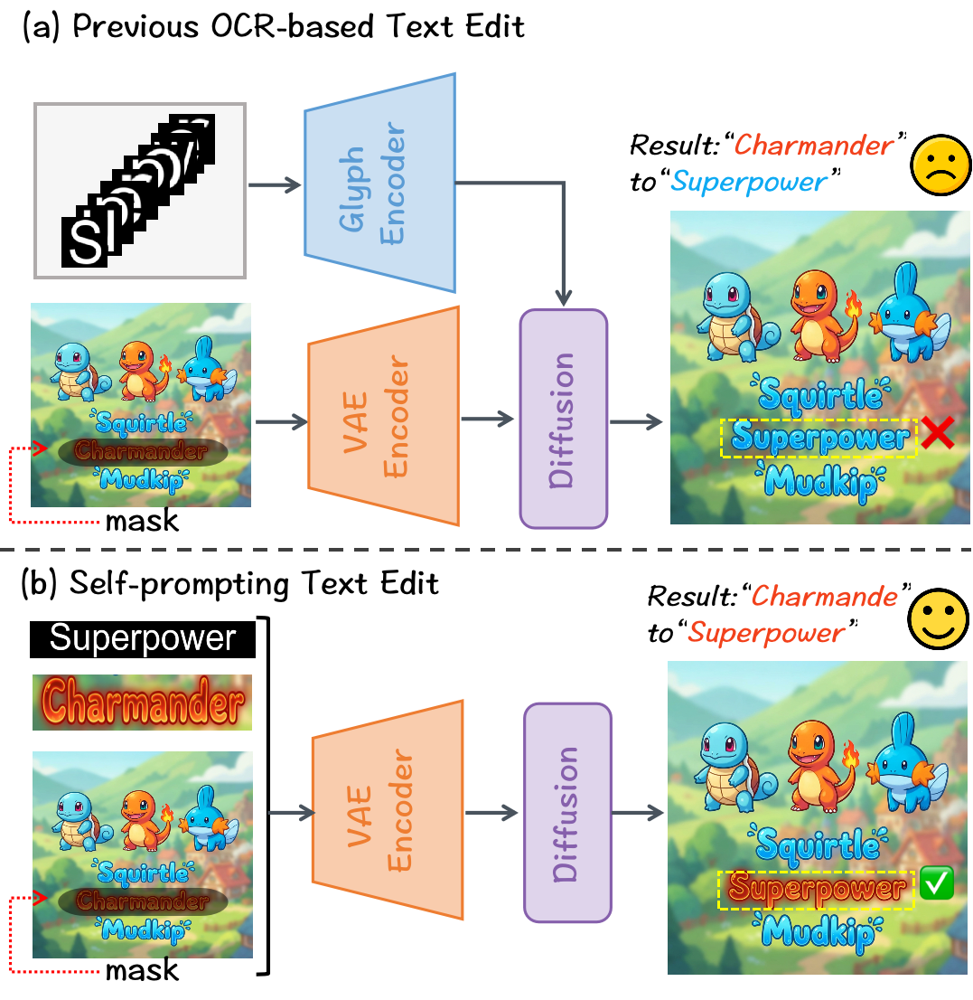
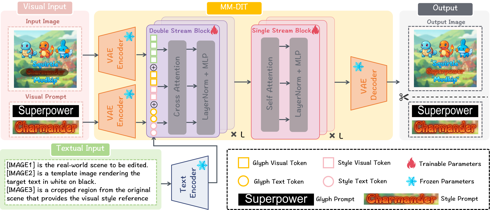
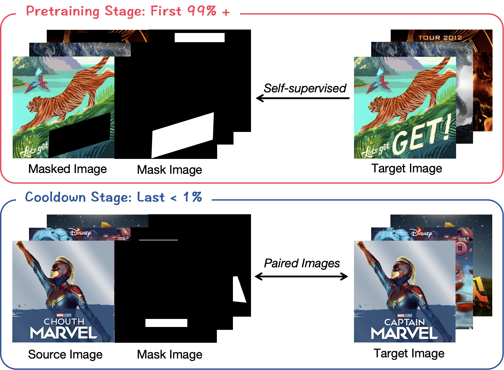
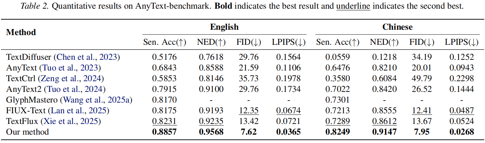
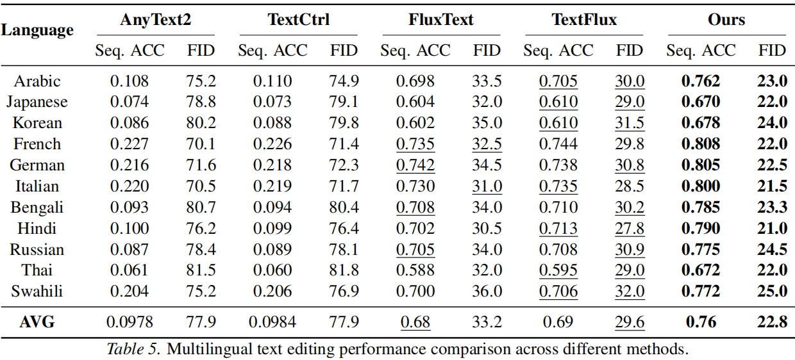

Scene text editing aims to modify text inside images while keeping the edited results natural and visually consistent. However, existing methods often fail to preserve the original text’s style and are usually limited to a fixed set of words or languages.
We propose a self-prompting text editing method that learns directly from the original image, without requiring additional text encoders. By leveraging the contextual learning ability of modern generative models, our method can edit previously unseen text while preserving the original visual style.
Our approach supports open-vocabulary multilingual editing across languages such as Chinese, English, Japanese, Korean, Russian, and Thai. Experiments show that it produces more accurate and realistic editing results than existing methods.




